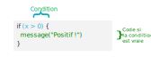
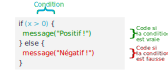
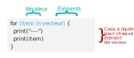

Partie 15 Programmer avec R
Nous avons vu dans la partie précédente comment écrire nos propres fonctions. Pour pouvoir aller plus loin nous allons rappeler ou aborder ici des types de données et des éléments du langage qui permettent de programmer des actions un peu plus complexes.
Les notions décrites dans cette partie s’appliquent pour le développement de fonctions, mais peuvent aussi être mises en oeuvre à tout moment dans un script.
On commence par charger les jeux de données d’exemple utilisés par la suite :
15.1 Structures de données
R propose de nombreuses structures de données différentes, et les extensions peuvent en implémenter de nouvelles. Cette section présente trois structures parmi les plus utilisées : les vecteurs atomiques, les listes et les tableaux de données.
15.1.1 Vecteurs atomiques
Les vecteurs atomiques sont des structures qui regroupent plusieurs éléments, avec une contrainte : ces éléments doivent tous être du même type, et ils ne peuvent pas contenir d’objets complexes. Les vecteurs atomiques ont déjà été introduits section 9.1.
15.1.1.1 Création d’un vecteur
On peut construire un vecteur manuellement avec la fonction c().
Si on souhaite générer un vecteur de valeurs entières successives, on peut utiliser l’opérateur : ou la fonction seq_len().
La fonction seq() permet de générer des séquences régulière plus complexes.
seq(0.5, 2.5, by = 0.5)
#> [1] 0.5 1.0 1.5 2.0 2.5
seq(0, 4, length.out = 6)
#> [1] 0.0 0.8 1.6 2.4 3.2 4.0Enfin, la fonction rep() permet de répéter un élément ou un vecteur.
rep("Pomme", 6)
#> [1] "Pomme" "Pomme" "Pomme" "Pomme" "Pomme" "Pomme"
rep(1:4, 2)
#> [1] 1 2 3 4 1 2 3 4Il peut parfois être utile de créer des vecteurs “vides”. Dans ce cas on peut les initialiser avec les fonctions vector(), character() ou numeric(). Par défaut ces fonctions renvoient un vecteur vide, sans éléments, mais on peut aussi leur indiquer en argument le nombre d’éléments souhaités.
15.1.1.2 Vecteurs nommés
Les éléments d’un vecteur peuvent être nommés. Ceci peut se faire au moment de la création du vecteur.
On peut utiliser names() pour récupérer les noms des éléments d’un vecteur.
On peut aussi utiliser names() pour créer ou modifier les noms d’un vecteur existant.
15.1.1.3 Types de vecteurs
On peut déterminer le type d’un vecteur avec l’instruction typeof.
x <- c(1, 3, 8)
typeof(x)
#> [1] "double"
y <- c("foo", "bar", "baz")
typeof(y)
#> [1] "character"
z <- c(TRUE, FALSE, FALSE)
typeof(z)
#> [1] "logical"Parmi les principaux types de données on notera28 :
- les chaînes de caractères (
character) - les nombres flottants (
double) - les nombres entiers (
integer) - les valeurs logiques (
logical)
À noter que par défaut les nombres sont considérés comme des nombres flottants (des nombres décimaux avec une virgule) : pour les définir explicitement comme nombres entiers on peut leur ajouter le suffixe L.
On peut tester le type d’un vecteur avec les fonctions is.character, is.double, is.logical… Autre fonction utile, is.numeric teste si un vecteur est de type double ou integer.
Petite spécificité, les facteurs (voir section 9.3.1) ne sont pas considérés par R comme des character, même s’ils comportent des chaînes de caractères. Pour tester si un vecteur est de type facteur, on utilise is.factor().
fac <- factor(c("rouge", "vert", "rouge"))
is.character(fac)
#> [1] FALSE
is.factor(fac)
#> [1] TRUETous les éléments d’un vecteur doivent être du même type. Si ça n’est pas le cas, les éléments seront convertis au type le plus “général”, sachant que les character sont plus généraux que les numeric, qui sont eux-mêmes plus généraux que les logical.
Dans l’exemple suivant, le nombre 1 est transformé en chaîne de caractère "1".
Si on mélange nombres et valeurs logiques, les TRUE sont convertis en 1 et les FALSE en 0.
Si la valeur NA, comme on l’a vu, permet d’indiquer une valeur manquante (Not Available), il existe en réalité plusieurs types de NA, même si cette distinction est la plupart du temps transparente pour l’utilisateur. On a ainsi notamment des valeur NA_integer_, NA_character_, NA_real_.
La conversion automatique d’un type en un autre est à l’origine d’un idiome courant en R. Quand on applique une fonction qui attend un vecteur de nombres à un vecteur de valeurs logiques, celles-ci sont automatiquement converties, les TRUE devenant 1 et les FALSE devenant 0. Du coup, si on applique sum() à un vecteur de valeurs logiques, le résultat est égal au nombre de valeurs TRUE.
On peut donc aussi appliquer sum() à un test, et on obtiendra le nombre de valeurs pour lesquelles le test est vrai.
Ceci fournit un raccourci très pratique. Dans l’exemple suivant, on tire 1000 nombres au hasard entre 0 et 1 et on regarde le nombre de valeurs obtenues inférieures à 0,5.
Autre raccourci moins utilisé, appliquer mean() au résultat d’un test donne la proportion de valeurs pour lesquelles le test est vrai.
15.1.1.4 Sélection d’éléments
On a vu section 9.1 que l’opérateur [] peut être utilisé pour sélectionner ou modifier des éléments d’un vecteur. Cet opérateur peut comporter :
- des nombres (qui sélectionnent par position)
- des chaînes de caractères (qui sélectionnent par nom)
- un test ou des valeurs logiques (qui sélectionnent les éléments correspondant à
TRUE)
x <- c(e1 = 1, e2 = 2, e3 = 8, e4 = 12)
x[c(1, 4)]
#> e1 e4
#> 1 12
x[c("e2", "e4")]
#> e2 e4
#> 2 12
x[x < 10]
#> e1 e2 e3
#> 1 2 8Si on fournit à [] un ou plusieurs nombres négatifs, les valeurs correspondantes seront supprimées plutôt que sélectionnées.
Si on souhaite afficher les premières ou dernières valeurs d’un vecteur, les fonctions head() et tail() peuvent être utiles.
15.1.1.5 Modification
Utilisé conjointement avec l’opérateur d’assignation <-, l’opérateur [] permet de remplacer des éléments.
x <- c(e1 = 1, e2 = 2, e3 = 8, e4 = 12)
x[1] <- -1000
x["e2"] <- 0
x[x > 10] <- NA
x
#> e1 e2 e3 e4
#> -1000 0 8 NAUtilisé sans arguments, [] se contente de renvoyer le vecteur. Mais couplé à une assignation, il remplace chacun des éléments du vecteur plutôt que le vecteur lui-même.
15.1.2 Listes
Les listes sont une généralisation des vecteurs : elles regroupent également plusieurs éléments, mais ceux-ci peuvent être de n’importe quel type, y compris des objets complexes. Une liste peut donc contenir elle-même des vecteurs, des listes, des tableaux de données, des fonctions, des graphiques ggplot2 stockés dans un objet, etc.
15.1.2.1 Création
On construit une liste avec la fonction list.
list(1, "foo", c("Pomme", "Citron"))
#> [[1]]
#> [1] 1
#>
#> [[2]]
#> [1] "foo"
#>
#> [[3]]
#> [1] "Pomme" "Citron"La manière dont R affiche le contenu d’une liste dans la console diffère de celle des vecteurs. Dans le cas d’une liste ses éléments sont affichés les uns en dessous des autres, et séparés par leur indice numérique entre une paire de crochets.
Comme pour les vecteurs, on peut nommer les éléments à la création de la liste ou avec la fonction names().
list(nombre = 1, char = "foo", vecteur = c("Pomme", "Citron"))
#> $nombre
#> [1] 1
#>
#> $char
#> [1] "foo"
#>
#> $vecteur
#> [1] "Pomme" "Citron"Dans ce cas l’affichage de la liste dans la console montre ces noms plutôt que les indices numériques.
Si les noms comportent des caractères spéciaux comme des espaces, il faut les entourer de guillemets ou de quotes inverses.
L’affichage des listes peut vite devenir illisible quand la liste est plus complexe29.
l <- list(
l2 = list(x = 1:10, y = c("Pomme", "Citron")),
df = data.frame(v1 = 2:5, v2 = LETTERS[2:5]),
y = runif(10)
)
l
#> $l2
#> $l2$x
#> [1] 1 2 3 4 5 6 7 8 9 10
#>
#> $l2$y
#> [1] "Pomme" "Citron"
#>
#>
#> $df
#> v1 v2
#> 1 2 B
#> 2 3 C
#> 3 4 D
#> 4 5 E
#>
#> $y
#> [1] 0.57274064 0.56530964 0.30606234 0.09129552 0.66332688 0.02656857
#> [7] 0.72651089 0.70001916 0.74131429 0.48641652Dans ce cas la fonction str peut être utile pour afficher de manière plus compacte la structure de la liste.
15.1.2.2 Ajout d’éléments
Attention, si on souhaite ajouter un nouvel élément à une liste, il ne faut pas utiliser à nouveau list(), car dans ce cas notre liste de départ est vue comme une “sous-liste”.
l <- list(e1 = 1:3, e2 = "Chihuhua")
l2 <- list(l, nouveau = 100)
str(l2)
#> List of 2
#> $ :List of 2
#> ..$ e1: int [1:3] 1 2 3
#> ..$ e2: chr "Chihuhua"
#> $ nouveau: num 100Il faut à la place utiliser c(), comme pour les vecteurs.
l3 <- c(l, nouveau = 100)
str(l3)
#> List of 3
#> $ e1 : int [1:3] 1 2 3
#> $ e2 : chr "Chihuhua"
#> $ nouveau: num 100c() permet aussi de “concaténer” deux listes existantes en une seule.
l1 <- list(a = 1, b = 2)
l2 <- list(x = 3, y = 4)
c(l1, l2)
#> $a
#> [1] 1
#>
#> $b
#> [1] 2
#>
#> $x
#> [1] 3
#>
#> $y
#> [1] 4On peut aussi utiliser la fonction append() qui permet d’ajouter de nouveaux éléments à la fin de la liste ou de les insérer à une position spécifique indiquée par l’argument after.
15.1.2.3 Sélection d’éléments
Il y a deux opérateurs différents qui permettent de sélectionner ou modifier les éléments d’une liste : les crochets simples [] et les crochets doubles [[]]. La différence entre ces deux opérateurs est souvent source de confusion.
Partons de la liste suivante :
l <- list(1:5, "foo", c("Pomme", "Citron"))
l
#> [[1]]
#> [1] 1 2 3 4 5
#>
#> [[2]]
#> [1] "foo"
#>
#> [[3]]
#> [1] "Pomme" "Citron"Si on utilise les crochets simples pour sélectionner le premier élément de cette liste, on obtient le résultat suivant :
On notera que le résultat est une liste à un seul élément.
Si on utilise les crochets doubles :
On obtient cette fois-ci non pas une liste composée du premier élément, mais le contenu de ce premier élément.
La différence est importante, mais pas toujours facile à retenir. On peut utiliser deux petites astuces mnémotechniques :
-
si une liste est un train composé de plusieurs wagons,
[1]retourne le premier wagon du train, tandis que[[1]]renvoie le contenu du premier wagon. -
une alternative est de considérer que
[[]]va chercher “plus profondément” que[].
Un autre point important est que si on passe plusieurs éléments à [[]], la sélection se fait d’une manière récursive peu intuitive et source d’erreurs. Il est donc conseillé de toujours utiliser [[]] avec un seul argument, et d’utiliser [] si on souhaite sélectionner plusieurs éléments d’une liste.
En résumé :
-
si on souhaite récupérer uniquement le contenu d’un élément d’une liste, on utilise
[[]]avec un seul argument. -
si on souhaite récupérer une nouvelle liste en sélectionnant des éléments de notre liste actuelle, on utilise
[]avec un ou plusieurs arguments.
Comme pour les vecteurs, on peut aussi utiliser des nombres négatifs avec [] pour exclure des éléments plutôt que les sélectionner, ainsi que les fonctions head() et tail().
Si la liste est nommée, on peut sélectionner des éléments par noms avec les deux opérateurs.
l <- list(nombre = 1, char = "foo", vecteur = c("Pomme", "Citron"))
l[c("nombre", "char")]
#> $nombre
#> [1] 1
#>
#> $char
#> [1] "foo"
l[["vecteur"]]
#> [1] "Pomme" "Citron"On peut aussi utiliser l’opérateur $, qui équivaut à [[]] :
Là aussi, si le nom comporte des espaces, on doit l’entourer avec des quotes inverses.
Attention, $ effectue ce qu’on appelle du “partial matching”, c’est-à-dire qu’il peut récupérer un élément même si on lui a passé seulement le début du nom.
15.1.2.4 Modification
Comme pour les vecteurs, on peut utiliser les opérateurs de sélection pour modifier des éléments. Si on n’en modifie qu’un seul, [] et [[]] sont équivalents.
l <- list(nombre = 1:5, char = "foo", vecteur = c("Pomme", "Citron"))
l[1] <- "first"
l[[2]] <- "second"
l
#> $nombre
#> [1] "first"
#>
#> $char
#> [1] "second"
#>
#> $vecteur
#> [1] "Pomme" "Citron"Si on souhaite modifier plusieurs éléments, on doit utiliser les crochets simples.
l <- list(nombre = 1:5, char = "foo", vecteur = c("Pomme", "Citron"))
l[c(1, 3)] <- 0
l
#> $nombre
#> [1] 0
#>
#> $char
#> [1] "foo"
#>
#> $vecteur
#> [1] 0Comme pour la sélection, attention à ne pas utiliser les crochets doubles pour modifier plusieurs éléments d’une liste. Ceux-ci ne génèreront pas forcément d’erreur mais n’auront pas le comportement attendu.
Enfin, si on souhaite supprimer un ou plusieurs éléments d’une liste, il faut leur attribuer la valeur NULL30.
15.1.2.5 Utilisation
En tant que généralisation des vecteurs atomiques, les listes sont utiles dès qu’on souhaite regrouper des éléments complexes ou hétérogènes.
On les utilisera par exemple pour retourner plusieurs résultats différents depuis une fonction.
indicateurs <- function(x) {
list(moyenne = mean(x), variance = var(x))
}
x <- 1:10
res <- indicateurs(x)
res$moyenne
#> [1] 5.5On utilise également les listes pour stocker une série d’objets complexes et leur appliquer des fonctions. Ce fonctionnement sera abordé en détail dans la section 17, mais en guise de petit aperçu, l’exemple fictif suivant récupère les noms de tous les fichiers CSV du répertoire courant et les importe tous dans une liste à l’aide de purrr::map() et de read_csv().
On pourra ensuite utiliser cette liste de tableaux pour leur appliquer des transformations ou les fusionner.
15.1.3 Tableaux de données (data frame et tibble)
On a déjà utilisé les tableaux de données à de nombreux reprises en manipulant des data frames ou des tibbles. Les seconds sont une variante des premiers, les différences entre les deux ayant été abordées section 6.4.
Un tableau de données est en réalité une liste nommée de vecteurs avec une contrainte spécifique : ces vecteurs doivent tous être de même longueur, ce qui garantit le format “tabulaire” des données.
15.1.3.1 Création
Un tableau de données est le plus souvent créé en important des données depuis un fichier au format CSV, tableur ou autre. On peut cependant créer un data frame manuellement via la fonction data.frame() :
df <- data.frame(
fruit = c("Pomme", "Pomme", "Citron"),
poids = c(154, 167, 92),
couleur = c("vert", "vert", "jaune")
)On peut aussi créer un tibble manuellement avec la fonction tibble(). La syntaxe est la même que celle de data.frame(), mais avec un comportement un peu différent : notamment, les noms comportant des espaces ou des caractères spéciaux sont conservés tels quels.
La fonction tribble() permet de créer un tableau manuellement avec une syntaxe “par ligne” qui peut être un peu plus naturelle.
df_tib <- tribble(
~fruit, ~poids, ~couleur,
"Pomme", 154, "vert",
"Pomme", 167, "vert",
"Citron", 92, "jaune"
)Enfin, on peut convertir un data frame en tibble avec la fonction as_tibble().
15.1.3.2 Noms de colonnes et de lignes
On peut accéder et modifier les noms des colonnes d’un tableau avec les fonctions names() ou colnames() (qui sont équivalentes).
On peut attribuer des noms aux lignes d’un data frame à l’aide de la fonction rownames(). Attention cependant, les noms de ligne ne sont (volontairement) pas pris en charge par les tibbles.
rownames(df) <- c("fruit1", "fruit2", "fruit3")
rownames(df)
#> [1] "fruit1" "fruit2" "fruit3"
rownames(as_tibble(df))
#> [1] "1" "2" "3"Si on souhaite conserver des noms de ligne en passant d’un data frame à un tibble, il faut les stocker dans une nouvelle colonne, soit en la créant manuellement soit avec la fonction rownames_to_column() (qui a l’avantage de placer la nouvelle colonne en première position du tableau).
15.1.3.3 Sélection de lignes et de colonnes
On a déjà vu dans les parties précédentes plusieurs manières de sélectionner des éléments dans un tableau de données.
Ainsi, on peut sélectionner une colonne via l’opérateur $.
Attention, si votre tableau de données est un data frame, R fera du partial matching sur le nom donné à $, ce qui n’est pas toujours souhaitable (les tibbles n’ont pas ce comportement).
Comme un tableau de données est en réalité une liste de colonnes, on peut utiliser l’opérateur [[]] pour sélectionner l’une de ses colonnes, par position ou par nom31.
Comme pour les listes, on peut aussi utiliser [] pour sélectionner des colonnes. La différence avec [[]] est que lorsqu’on sélectionne une unique colonne le résultat est un tableau à une colonne, et non un vecteur.
df[["couleur"]]
#> [1] "vert" "vert" "jaune"
df["couleur"]
#> # A tibble: 3 × 1
#> couleur
#> <chr>
#> 1 vert
#> 2 vert
#> 3 jauneOn peut également utiliser l’opérateur [] pour sélectionner à la fois des lignes et des colonnes, en lui passant deux arguments séparés par une virgule : d’abord la sélection des lignes puis celle des colonnes. Dans les deux cas on peut sélectionner par position, nom ou condition. Si on laisse un argument vide, on sélectionne l’intégralité des lignes ou des colonnes.
df[c(1, 3), "poids"]
#> [1] 154 92
df[df$poids > 150, ]
#> # A tibble: 2 × 3
#> fruit poids couleur
#> <chr> <dbl> <chr>
#> 1 Pomme 154 vert
#> 2 Pomme 167 vert
library(stringr)
df[, str_detect(names(df), "o")]
#> # A tibble: 3 × 2
#> poids couleur
#> <dbl> <chr>
#> 1 154 vert
#> 2 167 vert
#> 3 92 jauneAttention, le comportement de [,] est différent entre les tibbles et les data frame lorsqu’on ne sélectionne qu’une seule colonne. Dans le cas d’un data frame, le résultat est un vecteur, dans le cas d’un tibble le résultat est un tableau à une colonne.
Cette différence peut être source d’erreurs, il est donc important, notamment quand on développe une fonction qui prend un tableau de données en argument, de savoir si ce tableau est un data frame ou un tibble.
Par exemple, la fonction suivante prend comme arguments un tableau d et des noms de variable vars, puis retourne la matrice de variance-covariance du sous-tableau correspondant.
On peut l’appliquer sans souci à deux colonnes d’un data frame.
tab <- data.frame(x = runif(5), y = runif(5))
tab_cov(tab, c("x", "y"))
#> x y
#> x 0.07915637 -0.05172231
#> y -0.05172231 0.14087428Mais si on essaie de l’appliquer à une seule colonne, on obtient une erreur car d[, vars] renvoie un vecteur, tandis que cov() ne s’applique qu’à un tableau de données.
Si on transforme notre data frame en tibble, alors on peut appeler tab_cov() avec un seul nom de variables, car dans ce cas d[, vars] retourne bien un tableau à une colonne, et pas un vecteur.
Pour corriger le problème dans notre fonction, on peut soit convertir l’objet d en tibble avant d’utiliser [,].
Soit ajouter un troisième argument drop = FALSE dans notre appel à [,], qui fait que le résultat sera bien un tableau à une colonne même si d est un data frame.
15.1.3.4 Modification
On peut utiliser [[]] et [] avec l’opérateur d’assignation <- pour modifier tout ou partie d’un tableau de données.
df[["poids_kg"]] <- df$poids / 1000
df[df$fruit == "Citron", "fruit"] <- "Agrume"
df
#> # A tibble: 3 × 4
#> fruit poids couleur poids_kg
#> <chr> <dbl> <chr> <dbl>
#> 1 Pomme 154 vert 0.154
#> 2 Pomme 167 vert 0.167
#> 3 Agrume 92 jaune 0.092Enfin, [] utilisé sans arguments permet de sélectionner et de modifier l’ensemble des valeurs du tableau. Ainsi les deux instructions suivantes ont des effets très différents :
df[] <- "a"
df
#> # A tibble: 3 × 4
#> fruit poids couleur poids_kg
#> <chr> <chr> <chr> <chr>
#> 1 a a a a
#> 2 a a a a
#> 3 a a a a
df <- "a"
df
#> [1] "a"Pour conclure, on peut noter que l’utilisation des opérateurs [[]] et [] sur un tableau de données peut sembler redondante et moins pratique que l’utilisation des verbes de dplyr comme select() ou filter(). Ils peuvent cependant être utiles lorsqu’on souhaite éviter les complications liées à l’utilisation du tidyverse à l’intérieur de fonctions, comme indiqué section 18.
15.2 if, else : exécuter du code sous certaines conditions
15.2.1 if
L’instruction if permet de n’exécuter du code que si une condition est remplie.

if prend une condition (entre parenthèses) puis un bloc de code (entre accolades) qui n’est exécuté que si la condition est vraie.
Par exemple, dans le code suivant, le message Bonjour ! ne sera affiché que si la valeur de l’objet prenom vaut "Pierre-Edmond" :
Prenons tout de suite un exemple :
On peut utiliser ce code pour créer une passionnante fonction qui a pour objectif de ne dire bonjour qu’aux personnes qui s’appellent Pierre-Edmond :
bonjour_pierre_edmond <- function(prenom) {
if (prenom == "Pierre-Edmond") {
message("Bonjour !")
}
}
bonjour_pierre_edmond("Pierre-Edmond")
#> Bonjour !
bonjour_pierre_edmond("Valérie-Charlotte")Une autre utilisation possible (et un peu plus utile) dans le cadre d’une fonction est de n’exécuter certaines instructions que si la valeur d’un argument remplit une certaine condition. Dans l’exemple suivant, on n’applique la fonction round() que si l’argument arrondir vaut TRUE.
moyenne <- function(x, arrondir = TRUE) {
res <- mean(x)
if (arrondir) {
res <- round(res)
}
res
}
v <- c(1.4, 2.3, 8.9)
moyenne(v)
#> [1] 4
moyenne(v, arrondir = FALSE)
#> [1] 4.2À noter que quand le bloc de code qui suit une instruction if ne comporte qu’une seule instruction, on peut omettre les accolades qui l’entourent. Les syntaxe suivantes sont donc équivalentes :
Pour des raisons de lisibilité, dans ce qui suit on conservera les accolades dans tous les cas.
15.2.2 if / else
On utilise souvent if en conjonction avec l’instruction else. else précède un autre bloc de code R qui ne s’exécute que si la condition donnée à if est fausse :

On peut ainsi utiliser if / else pour une nouvelle fonction fort utile qui nous évitera bien des désagréments météorologiques :
conseil_vestimentaire <- function(temperature) {
if (temperature > 15) {
message("La polaire n'est pas forcément nécessaire.")
} else {
message("Vous devriez prendre une petite laine.")
}
}
conseil_vestimentaire(-5)
#> Vous devriez prendre une petite laine.Plus utile, on peut l’utiliser pour effectuer deux actions différentes en fonction de la valeur d’un argument. La fonction suivante génère deux graphiques différents selon le type du vecteur passé en argument :
graph_var <- function(x) {
if (is.character(x)) {
barplot(table(x))
} else {
hist(x)
}
}
graph_var(c("Pomme", "Pomme", "Citron"))

On peut évidemment passer des conditions plus complexes. Dans notre fonction, le test is.character(x) échoue si x est un facteur, alors qu’on souhaiterait quand même réaliser un barplot. On peut donc compléter la condition du if :
graph_var <- function(x) {
if (is.character(x) || is.factor(x)) {
barplot(table(x))
} else {
hist(x)
}
}
graph_var(factor(c("Pomme", "Pomme", "Citron")))
15.2.3 “if” / “else if” / “else”
On peut aussi utiliser des blocs supplémentaires else if qui permettent d’ajouter de nouvelles conditions. Dès qu’une condition est vraie, le bloc de code correspondant est exécuté. Le dernier bloc else est exécuté si aucune des conditions n’est vraie.
On peut donc améliorer encore notre fonction graph_var() pour tester les différents types explicitement et afficher un message si aucun type géré n’a été reconnu.
graph_var <- function(x) {
if (is.character(x) || is.factor(x)) {
barplot(table(x))
} else if (is.numeric(x)) {
hist(x)
} else {
message("Le type de x n'est pas géré par la fonction")
}
}
graph_var(c(TRUE, FALSE, TRUE))
#> Le type de x n'est pas géré par la fonctionAttention, seul le bloc de la première condition vraie est exécuté, l’ordre des conditions est donc important. Dans l’exemple suivant, le second bloc n’est jamais exécuté et donc le second message jamais affiché.
test_x <- function(x) {
if (x < 100) {
message("x est inférieur à 100")
} else if (x < 10) {
message("x est inférieur à 10")
}
}
test_x(5)
#> x est inférieur à 100Il est donc important d’ordonner les conditions de la plus spécifique à la plus générale.
15.2.4 Construction de conditions complexes
On peut combiner plusieurs tests avec les opérateurs logiques classiques :
&&est l’opérateur “et”, qui est vrai si les deux conditions qu’il réunit sont vraies||est l’opérateur “ou”, qui est vrai si au moins l’une des deux conditions qu’il réunit sont vraies!est l’opérateur “non”, qui teste si la condition qu’il précède est fausse
Ainsi, si on veut qu’une variable taille soit comprise entre 100 et 150, on écrira :
Si on souhaite que temperature soit inférieure à 10 ou que pluie soit égale à “averse” :
Enfin, si on souhaite que la variable v ne soit pas égale à NULL :
On pourra noter qu’il existe deux types d’opérateurs “et” et “ou” dans R :
-
&et|sont des opérateurs vectorisés. Ils peuvent s’appliquer à des vecteurs et retourneront un vecteur deTRUEetFALSE -
&&et||ne peuvent retourner qu’une seule valeur, et si on leur fournit des vecteurs ils n’utiliseront que leurs premières valeurs
Comme la condition passée à un if ne doit retourner qu’une seule valeur (et non un vecteur), on utilisera de préférence && et || (et on privilégiera les autres pour les recodages).
15.2.5 Différence entre if / else et ifelse
Une source fréquente de confusion concerne la différence entre les instructions if / else et la fonction ifelse() de R base (ou son équivalent if_else de dplyr, voir section 9.4.1). Les deux sont pourtant très différentes :
if/elses’utilisent quand on teste une seule condition et qu’on veut exécuter des blocs de code différentsifelseetif_elseappliquent un test à un vecteur et retournent un vecteur
Premier cas de figure : on a une seule valeur x et on veut afficher un message différent selon si celle-ci est inférieure ou supérieure à 10. Dans ce cas on utilise if / else.
Deuxième cas de figure : x est un vecteur et on souhaite recoder chacune de ses valeurs selon le même critère que ci-dessus. Dans ce cas on utilise ifelse ou if_else.
x <- 1:10
ifelse(x >= 5, ">=5", "<5")
#> [1] "<5" "<5" "<5" "<5" ">=5" ">=5" ">=5" ">=5" ">=5" ">=5"Une erreur fréquente, notamment quand on est dans une fonction, est de passer à if une condition appliquée à un vecteur. Dans ce cas R a la bonne idée de mettre un message d’avertissement.
x <- 1:10
if (x >= 5) {
message(">=5")
}
#> Warning in if (x >= 5) {: la condition a une longueur > 1 et seul le premier
#> élément est utilisé
À retenir donc : quand on utilise l’instruction if, la condition qui lui est passée entre parenthèses ne doit renvoyer qu’une seule valeur TRUE ou FALSE.
15.3 Contrôle de l’exécution et gestion des erreurs
L’instruction if est souvent utilisée dans des fonctions pour valider les valeurs passées en arguments, ou plus généralement pour contrôler que l’exécution du code se déroule comme prévu.
15.3.1 Utilisation de return pour sortir de la fonction
Une première utilisation peut être d’utiliser un return pour interrompre l’exécution de la fonction et retourner un résultat. On a en effet vu section 14.2.4 que dès que R rencontre un return dans une fonction, il interrompt immédiatement l’exécution de celle-ci.
La fonction suivante retourne la longueur du mot le plus long dans un vecteur de chaînes de caractères. On ajoute donc un test qui retourne NA dans le cas où le vecteur passé en argument serait d’un type différent.
15.3.2 warning
La fonction warning fonctionne comme message mais permet d’afficher un avertissement. Celui-ci est présenté différemment dans la console de manière à attirer l’attention sur un point particulier. Il indique également la fonction qui a déclenché l’avertissement ce qui peut être utile quand on exécute toute une série d’instructions d’un seul coup.
Ainsi, dans la fonction précédente, on peut ajouter un avertissement dans le cas où le vecteur passé en argument n’est pas de type character.
15.3.3 stop et stopifnot
stop fonctionne comme warning mais déclenche une erreur qui interrompt totalement l’exécution du code. Quand R le rencontre dans une fonction, il sort immédiatement de la fonction, ne retourne aucun résultat, et il interrompt également toutes les autres instructions en attente d’exécution.
On peut ainsi considérer, toujours dans la fonction mot_le_plus_long, que le fait de ne pas fournir en argument un vecteur de type character est suffisamment “grave” pour interrompre l’exécution en cours et laisser la personne qui utilise la fonction régler le problème.
mot_le_plus_long <- function(x) {
if (!is.character(x)) {
stop("x doit être de type character.")
}
max(nchar(x))
}
mot_le_plus_long(1:5)
#> Error in mot_le_plus_long(1:5): x doit être de type character.
mot_le_plus_long(c("Pomme", "Citron"))
#> [1] 6Dans ce cas on remarque que le deuxième appel mot_le_plus_long(c("Pomme", "Citron")) n’est pas exécuté : R a tout interrompu dès qu’il a rencontré l’instruction stop().
Savoir si un “problème” doit être traité comme un avertissement ou comme une erreur relève du choix de la personne qui développe la fonction : chaque cas est particulier.
stopifnot est une syntaxe alternative un peu plus compacte qui combine test et message d’erreur. On lui passe en premier argument une condition, et en deuxième argument un message à afficher si la condition est fausse.
On peut donc réécrire notre fonction mot_le_plus_long ci-dessus de la manière suivante :
15.3.4 Tester la présence d’un argument
Il existe deux méthodes pour tester si l’argument d’une fonction a été défini lors de l’appel de cette fonction. La plus courante est de donner à cet argument une valeur par défaut, le plus souvent NULL, et de tester cette valeur.
Soit une fonction qui génère un graphique avec un argument titre qui permet de définir son titre. On peut mettre par défaut cet argument à NULL et ajouter un titre par défaut si la personne qui l’utilise n’en a pas fourni.
histo <- function(x, titre = NULL) {
if (is.null(titre)) {
titre <- paste("Moyenne : ", mean(x))
}
hist(x, main = titre)
}
histo(c(1, 15, 8, 10, 12, 18, 8, 4))

Quand on ne souhaite pas mettre de valeur par défaut, on peut tester l’absence de l’argument à l’aide de la fonction missing().
moyenne_arrondie <- function(x) {
if (missing(x)) stop("x est manquant")
round(mean(x))
}
moyenne_arrondie()
#> Error in moyenne_arrondie(): x est manquantEn dehors de certains cas particuliers l’utilisation de missing() est assez rare, car les arguments sans valeur par défaut sont le plus souvent des valeurs “obligatoires” qui génèrent de toutes manières une erreur quand elles ne sont pas définies.
15.4 for et while : répéter des instructions dans une boucle
Les boucles sont un type d’instructions qui permet de répéter du code plusieurs fois, soit en fonction d’une condition soit selon les éléments d’un vecteur32.
15.4.1 for
Le premier type de boucle est défini par l’instruction for. Sa structure est la suivante :

Le principe est le suivant : on fournit à for entre parenthèses une expression du type item in vecteur, puis un bloc de code entre accolades. for va exécuter le bloc de codes pour chacune des valeurs de vecteur, et affectera tour à tour à item la valeur courante de vecteur.
Prenons tout de suite un exemple pour mieux comprendre.
Ici notre vecteur “source” est constitué des entiers de 1 à 5. for va donc exécuter l’instruction print(item) 5 fois, en remplaçant la première fois item par 1, la seconde fois par 2, etc.
On peut itérer sur tout type d’objet, et le nom item peut être remplacé par ce que l’on souhaite :
for (prenom in c("Pierre-Edmond", "Faustine-Charlotte")) {
print(paste("Bonjour", prenom, "!"))
}
#> [1] "Bonjour Pierre-Edmond !"
#> [1] "Bonjour Faustine-Charlotte !"Exemple un peu plus complexe, la fonction suivante prend en entrée un data frame et un vecteur de noms de variables, et affiche le résultat de summary pour chacune d’entre elles.
summaries <- function(d, vars) {
for (var in vars) {
message("--- ", var, " ---")
print(summary(d[, var]))
}
}
summaries(hdv2003, c("sexe", "age", "heures.tv"))
#> --- sexe ---
#> Homme Femme
#> 899 1101
#> --- age ---
#> Min. 1st Qu. Median Mean 3rd Qu. Max.
#> 18.00 35.00 48.00 48.16 60.00 97.00
#> --- heures.tv ---
#> Min. 1st Qu. Median Mean 3rd Qu. Max. NA's
#> 0.000 1.000 2.000 2.247 3.000 12.000 5Un “pattern” relativement fréquent est de vouloir itérer sur les éléments d’un vecteur par leur position. Il est du coup assez naturel d’utiliser quelque chose comme for (i in 1:length(x)). Il est cependant préférable dans ces cas-là d’utiliser la fonction dédiée seq_along(x)33.
Dans l’exemple suivant, la fonction affiche_dimensions prend en entrée une liste de data frames et affiche leur nombre de lignes et de colonnes.
affiche_dimensions <- function(dfs) {
for (i in seq_along(dfs)) {
name <- names(dfs)[[i]]
df <- dfs[[i]]
message("Dimensions de ", name, " : ", nrow(df), "x", ncol(df))
}
}
l <- list(
hdv = hdv2003,
rp = rp2012
)
affiche_dimensions(l)
#> Dimensions de hdv : 2000x24
#> Dimensions de rp : 5170x60À noter que quand on sort d’une boucle for, l’objet utilisé pour itérer sur les valeurs du vecteur existe toujours, et contient la dernière valeur qu’il a prise.
15.4.2 while
while prend en argument une condition et exécute le bloc de code qui suit tant que la condition est vraie :

Par exemple, la fonction suivante simule un tirage à pile ou face en tirant un nombre au hasard entre 0 et 1 à l’aide de la fonction runif() et en testant si cette valeur est inférieure à 0,5. La simulation de tirage s’exécute et affiche le résultat tant qu’on obtient “Pile” (et interrompt la boucle au premier “Face”) :
resultat <- ""
while (resultat != "Face") {
tirage <- runif(1)
if (tirage <= 0.5) {
resultat <- "Pile"
} else {
resultat <- "Face"
}
print(resultat)
}[1] "Pile"
[1] "Pile"
[1] "Face"15.4.3 break et next
Il peut arriver qu’on souhaite sortir d’une boucle avant d’avoir terminé toutes ses itérations, notamment dans le cas d’une boucle for. C’est ce que permet de faire l’instruction break, qui interrompt la boucle et continue à l’instruction suivante.
Par exemple, la fonction suivante compte le nombre de valeurs inférieure à un certain seuil au début d’un vecteur.
nb_seuil <- function(x, seuil) {
nb_valeurs <- 0
for (item in x) {
if (item > seuil) break
nb_valeurs <- nb_valeurs + 1
}
nb_valeurs
}
nb_seuil(c(1, 25, 4, 110, 41), seuil = 100)
#> [1] 3L’instruction next a un comportement assez similaire mais plutôt que de sortir de la boucle, elle passe à l’itération suivante.
Dans l’exemple suivant, on réécrit la fonction summaries vue précédemment pour prendre en compte le fait qu’un nom de variable non existante puisse être passé en argument. Dans ce cas on passe directement à la variable suivante.
summaries <- function(d, vars) {
for (var in vars) {
if (!(var %in% names(d))) {
next
}
message("--- ", var, " ---")
print(summary(d[, var]))
}
}
summaries(hdv2003, c("sexe", "diplodocus", "age", "heures.tv"))
#> --- sexe ---
#> Homme Femme
#> 899 1101
#> --- age ---
#> Min. 1st Qu. Median Mean 3rd Qu. Max.
#> 18.00 35.00 48.00 48.16 60.00 97.00
#> --- heures.tv ---
#> Min. 1st Qu. Median Mean 3rd Qu. Max. NA's
#> 0.000 1.000 2.000 2.247 3.000 12.000 515.4.4 Quand (ne pas) utiliser des boucles
Le mécanisme des boucles, assez intuitif, peut rapidement être utilisé pour beaucoup d’opérations. Il y a cependant sous R des alternatives souvent plus rapides, qu’il est préférable de privilégier.
Avant tout, de nombreuses fonctions R sont “vectorisées” et s’appliquent directement à tous les éléments d’un vecteur. Dans le cas où une fonction vectorisée existe déjà, elle propose en général une syntaxe plus compacte et une exécution plus rapide.
Pour prendre un exemple caricatural, si on souhaite ajouter 10 à chaque élément d’un vecteur on évitera absolument de faire :
Et on se contentera d’un beaucoup plus simple x + 10.
Autre exemple, la boucle suivante remplace les valeurs manquantes d’un vecteur par les valeurs correspondantes d’un deuxième vecteur.
x <- c(1, NA, 4, 110, NA)
y <- c(20, 30, 40, 50, 60)
for (i in seq_along(x)) {
if (is.na(x[i])) x[i] <- y[i]
}
print(x)
#> [1] 1 30 4 110 60Cette boucle sera avantageusement remplacée par une utilisation plus compacte et plus rapide de l’opérateur [].
x <- c(1, NA, 4, 110, NA)
y <- c(20, 30, 40, 50, 60)
x[is.na(x)] <- y[is.na(x)]
x
#> [1] 1 30 4 110 60En dehors des questions de performance, une boucle peut aussi être moins lisible que certaines alternatives. Soit la fonction suivante, qui prend en entrée un vecteur de mots et retourne le nombre total de voyelles qu’il contient.
library(stringr)
n_voyelles <- function(mots) {
nb <- str_count(mots, "[aeiou]")
sum(nb)
}
n_voyelles(c("le", "chat", "roupille"))
#> [1] 6Supposons qu’on souhaite appliquer cette fonction à une série de vecteurs de mots contenus dans une liste. On pourrait utiliser une boucle for parcourant cette liste, appliquant la fonction, et ajoutant le résultat à un vecteur numérique vide préalablement créé avec numeric(0).
phrases <- list(
c("le", "chat", "roupille"),
c("l'autre", "chat", "roupille", "aussi")
)
res <- numeric(0)
for (i in seq_along(phrases)) {
res[i] <- n_voyelles(phrases[[i]])
}
res
#> [1] 6 11On verra cependant dans la section 17 que des fonctions permettent de faire ce genre de choses de manière beaucoup plus simple et plus lisible. Ici par exemple on obtiendrait le même résultat avec un simple :
Au final, entre les fonctions vectorisées existantes et les possibilités fournies par purrr, il est assez rare de devoir utiliser une boucle directement dans R. Pour autant, il ne faut pas non plus tomber dans l’excès inverse et considérer que tout usage de for ou while doit être évité : ces fonctions sont parfaitement justifiées dans de nombreux cas de figure, et si vous trouvez une solution qui fonctionne de manière efficace avec une boucle for, il n’est pas forcément utile de chercher à la remplacer à tout prix.
15.5 Ressources
L’ouvrage R for Data Science (en anglais), accessible en ligne, contient un chapitre sur les vecteurs atomiques et les listes, un chapitre dédié aux tibbles, un chapitre sur les boucles for, et un chapitre sur les blocs if / else.
Pour aller encore plus loin, l’ouvrage Advanced R (également en anglais) aborde de manière approfondie les structures de données, les opérateurs de sélection [], [[]] et $, et les tests et les boucles.
Sur le blog de ThinkR, un article détaillé sur l’utilisation des boucles et les alternatives possibles.
Sur le blog de Florian Privé, un billet approfondi sur les raisons pour lesquelles les boucles peuvent être lentes et sur les cas où il est préférable de ne pas les utiliser.
15.6 Exercices
15.6.1 Vecteurs atomiques
Exercice 1.1
À l’aide de seq(), créer un vecteur v contenant tous les nombres pairs entre 10 et 20.
Sélectionner les 3 premières valeurs de v.
Sélectionner toutes les valeurs de v strictement inférieures à 5.
Sélectionner toutes les valeurs de v sauf la dernière.
Exercice 1.2
Soit le vecteur nommé vn suivant :
Sélectionner les valeurs nommées “val1” et “val3”.
Sélectionner toutes les valeurs sauf celle nommée “val3”.
Facultatif : comparer les résultats des deux instructions suivantes.
Exercice 1.3
Soit les vecteurs x et y suivants :
À l’aide de l’opérateur [], sélectionner uniquement les valeurs NA de x.
De la même manière, sélectionner les valeurs de y correspondant aux valeurs NA de x.
En utilisant les deux instructions précédentes et l’opérateur d’assignation <-, remplacer les valeurs manquantes de x par les valeurs correspondantes de y.
15.6.2 Listes
Exercice 2.1
Créer la liste l ayant la structure suivante :
#> List of 3
#> $ : num 1
#> $ : chr "oui"
#> $ : int [1:3] 10 11 12Donner les noms suivants aux éléments de la liste : num, reponse et vec.
Ajouter un élément nommé chat et ayant pour valeur “Ronron” à la fin de l.
Modifier l’élément chat pour lui donner la valeur “Ronpchi”.
Supprimer l’élément vec de l.
Créer une liste l2 avec un seul élément nommé Incroyable élément et comme valeur 42.
Créer une liste l3 en concaténant l et l2.
Exercice 2.2
Créer une fonction nommée extremes qui prend en argument un vecteur et retourne une liste nommée comportant sa moyenne et sa médiane.
Appliquer cette fonction à un vecteur de votre choix et utiliser le résultat pour calculer l’étendue (soit la différence entre la valeur maximale et la valeur minimale).
Exercice 2.3
Soit la liste suivante :
Sélectionner la sous liste composée des éléments 1 et 3 de l.
Sélectionner la sous-liste composée du premier élément de l.
Sélectionner le contenu du premier élément de l.
En enchaînant deux opérations de sélection, sélectionner le deuxième élément du premier élément de l.
15.6.3 data frame et tibble
Exercice 3.1
Construire le tableau d_tib suivant à l’aide de la fonction tibble.
#> # A tibble: 3 × 2
#> `var 1` `var 2`
#> <int> <chr>
#> 1 1 rouge
#> 2 2 vert
#> 3 3 rougeLe convertir en data frame en lui appliquant la fonction data.frame() et stocker le résultat dans un objet d_df. Que constatez-vous si vous comparez d_tib et d_df ?
Sélectionner la colonne var 1 de d_tib à l’aide des opérateurs [[]], $, [,] et []. Quelles différences constatez-vous ?
Comparer les résultats de d_tib[, "var 1"] et d_df[, "var.1"].
Exercice 3.2
Créer le tableau df suivant :
df <- data.frame(
fruit = c("Pomme", "Pomme", "Citron"),
poids = c(154, 167, 92),
couleur = c("vert", "vert", "jaune")
)À l’aide de l’opérateur [,], sélectionner :
- les pommes et les colonnes
fruitetcouleur - les deux dernières lignes
- les lignes ayant un poids inférieur à 100 et la première colonne
Faire de même en utilisant les verbes de dplyr.
Exercice 3.3
Reprendre le tableau df de l’exercice précédent.
df <- data.frame(
fruit = c("Pomme", "Pomme", "Citron"),
poids = c(154, 167, 92),
couleur = c("vert", "vert", "jaune")
)À l’aide de l’opérateur [,], effectuer les opérations suivantes :
- Créer une nouvelle colonne
idavec les valeurs 1, 2, 3 - Remplacer la valeur “jaune” de la variable
couleurpar “jaune citron” - Créer une nouvelle colonne
poids_recqui vaut “léger” sipoidsest inférieur à 100, et “lourd” sinon
Effectuer les mêmes opérations en utilisant les verbes de dplyr.
15.6.4 if et else
Exercice 4.1
Écrire une fonction pile_ou_face qui ne prend aucun argument en entrée et qui effectue les actions suivantes :
- tire un nombre au hasard entre 0 et 1 avec
runif(1) - si ce nombre est inférieur à 0,5, retourne “pile”
- sinon, retourne “face”
Exercice 4.2
Créer une fonction moyenne_arrondie, qui prend en argument un vecteur x, un argument na.rm avec une valeur par défaut à TRUE, et un argument facultatif decimales. La fonction doit effectuer les opérations suivantes :
- calcule la moyenne du vecteur en tenant compte de l’argument
na.rmpassé à la fonction - si
decimalesest défini, on arrondit la moyenne au nombre de décimales correspondant avec la fonctionround() - retourne la moyenne, arrondie ou non
Exercice 4.3
Écrire une fonction avertissement qui prend deux arguments pluie et parapluie, avec comme valeurs FALSE par défaut, et qui effectue les opérations suivantes :
- si
pluievautTRUEetparapluievautFALSE, affiche “mouillé” - si
pluievautTRUEetparapluievautTRUE, affiche “bien vu” - si
pluievautFALSE, affiche “RAS”
Exercice 4.4
Écrire une fonction meteo qui prend un argument nommé temperature et effectue les actions suivantes :
- si
temperatureest inférieur à 0, affiche le message “ça caille” - si
temperatureest compris entre 0 et 15, affiche le message “fais pas chaud” - si
temperatureest compris entre 15 et 30, affiche le message “on est pas mal” - si
temperatureest supérieur à 30, affiche le message “tous à Miribel”
meteo <- function(temperature) {
if (temperature < 0) {
message("ça caille")
} else if (temperature < 15) {
message("fais pas chaud")
} else if (temperature < 30) {
message("on est pas mal")
} else {
message("tous à Mriribel")
}
}
# Ou bien
meteo <- function(temperature) {
if (temperature < 0) {
message("ça caille")
}
if (temperature >= 0 && temperature < 15) {
message("fais pas chaud")
}
if (temperature >= 15 && temperature < 30) {
message("on est pas mal")
}
if (temperature >= 30) {
message("tous à Mriribel")
}
}15.6.5 Contrôle de l’exécution
Exercice 5.1
Créer une fonction etendue qui renvoie la différence entre la plus grande et la plus petite valeur d’un vecteur.
Modifier la fonction pour qu’elle retourne NA si le vecteur passé en argument n’est pas numérique.
Modifier à nouveau la fonction pour qu’elle affiche un avertissement avant de renvoyer la valeur NA.
Exercice 5.2
Créer une fonction proportion qui prend en argument un vecteur et retourne les valeurs de ce vecteur divisée par leur somme.
Essayer d’exécuter proportion(c(-2, 1, 1)). Pourquoi obtient-on ce résultat ?
Modifier la fonction pour qu’elle retourne un message d’erreur si jamais la somme des éléments du vecteur vaut 0.
15.6.6 Boucles
Exercice 6.1
Charger le jeu de données hdv2003 de l’extension questionr avec :
À l’aide d’une boucle for, parcourir les noms des variables de hdv2003. Si la variable en question est numérique, faire l’histogramme de la variable avec la fonction hist().
Ajouter le nom de la variable comme titre du graphique en utilisant l’argument main de hist().
Exercice 6.2
La fonction readline() permet de lire une chaîne de caractère saisie au clavier de la manière suivante :
Écrire le code qui effectue les opérations suivantes :
- Afficher le message “Quel est le plus grand sociologue de tous les temps ?” et demander la réponse à l’utilisateur
- Si la réponse saisie est “Tonton Michel”, afficher “Bingo !”
- Sinon, afficher “Nope” et poser à nouveau la question
Exercice 6.3
À l’aide d’une boucle for, écrire une fonction somme_positifs qui prend en argument un vecteur et retourne la somme de tous les nombres positifs qu’il contient.
Réécrire cette fonction pour qu’elle retourne le même résultat mais sans utiliser de boucle.
Exercice 6.4
En utilisant une boucle for, créer une fonction somme_premiers_positifs qui prend en argument un vecteur et retourne la somme de tous les nombres positifs qu’il contient en partant du début du vecteur et en s’arrêtant au premier élément négatif (on pourra recopier et modifier la première fonction somme_positifs de l’exercice précédent).
Facultatif : réécrire la fonction pour qu’elle retourne le même résultat sans utiliser de boucle for.
Exercice 6.5
Soit la fonction pile_ou_face suivante, qui simule un jet de pièce :
pile_ou_face <- function() {
alea <- runif(1)
if (alea < 0.5) {
result <- "pile"
} else {
result <- "face"
}
result
}Modifier cette fonction en utilisant une boucle for pour qu’elle accepte un argument n et retourne un vecteur comprenant le résultat de n tirages.
Réécrire la fonction pour qu’elle retourne le même résultat sans utiliser de boucle for.
Il en existe d’autres, comme
complexouraw, mais qui sont moins fréquemment utilisés.↩Pour rappel, la fonction
runif()renvoit des nombres aléatoires suivant une loi uniforme, par défaut compris entre 0 et 1.↩Si on veut ajouter un élément
NULLà une liste, il faut utiliser les crochets simples avec la syntaxel["foo"] <- list(NULL).↩Attention, comme pour les listes, à ne pas utiliser
[[]]avec un argument de longueur supérieur à 1, car cela mène soit à des erreurs soit à des résultats contre-intuitifs.↩En complément, on verra également dans la section 17 d’autres fonctions tirées de l’extension
purrrqui permettent d’appliquer une fonction en itérant sur les éléments de plusieurs objets.↩L’intérêt de
seq_along(x)est notamment qu’elle n’essaie pas d’exécuter le bloc de code si jamaisxest de longueur nulle. Cf. des explications supplémentaires dans Advanced R↩